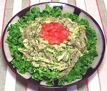

|
Tongue & Veal SaladItaly - Insalata di Lingua e Vitello | ||||
| Serves: Effort: Sched: DoAhead: |
4 salad *** 1 day Best |
A cold meat salad, not too tart. Italians are very big on veal, but it can be scarce and expensive in North America. Chicken thigh meat makes a suitable substitute. | |||
|
|
8 8 ------ 1 ar 1 1-1/4 2 2 1/3 1/2 1 1/3 1/4 ------ |
oz oz --- T oz T c t t t t --- |
Beef Tongue (1) Veal -or- (2) -- Dressing Bread slice, white Wine Vinegar, white Capers Dill Pickle Anchovy fillet (3) Parsley Olive Oil ExtV Worcestershire Mustard Salt Pepper -- Server over Lettuce Leaves |
This recipe benefits greatly from a night in the fridge. The photo expample was made with Chicken Thigh Meat, because the stores I shop at had no Veal that week. Do Ahead - (5 hrs - 30 min work)
|